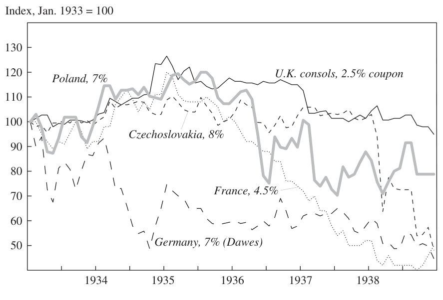
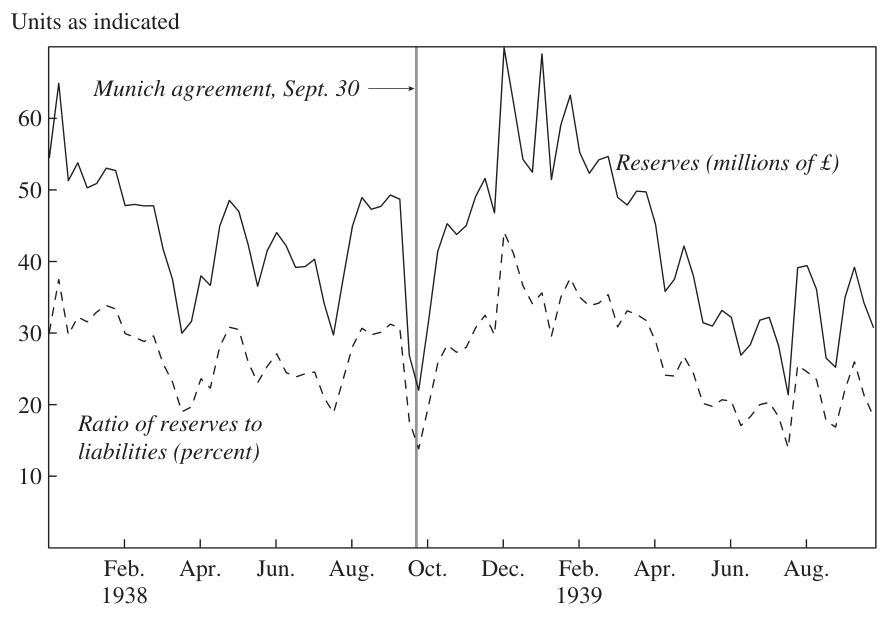
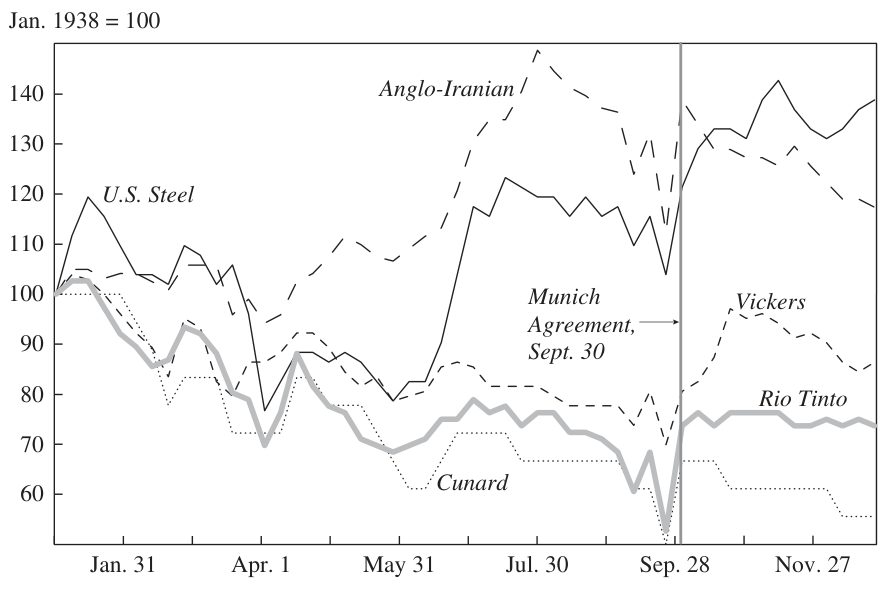
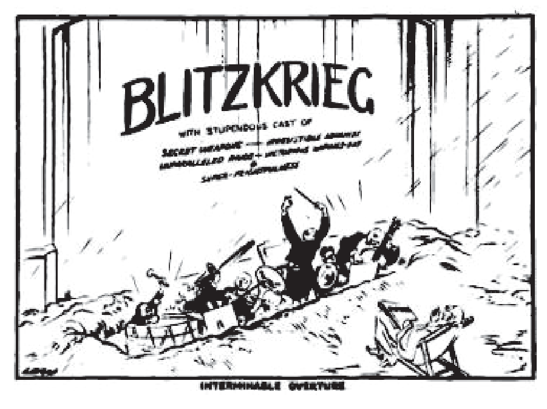

Earning from History? Financial Markets and the Approach of World Wars — Part 4/7: “Interminable Overture”
Even before the fateful year 1939, at least five acts by the German government clearly signaled Hitler’s intention to overthrow, by force or the threat of force, the European order that had been established at Paris in 1919. In March 1935 Hitler announced his intention to restore conscription in Germany, in violation of the Versailles Treaty. One year later he unilaterally reoccupied the demilitarized Rhineland, in violation of the Versailles and Locarno Treaties. Later that same year, he and his Italian counterpart Benito Mussolini intervened in the Spanish civil war, in contravention of the Non-Intervention Agreement of the summer of 1936. Then, in March 1938, Hitler ousted the Austrian chancellor Kurt Schuschnigg and proclaimed the annexation (Anschluss) of Austria by Germany, an act explicitly prohibited by the Versailles Treaty. Finally, in September 1938, Hitler threatened to go to war to separate the Sudetenland region from Czechoslovakia.65 On the other hand, at least four arguments were put forward in the 1930s for avoiding or at least postponing war by appeasing the dictators. The strategic argument was that an overstretched British Empire could not risk simultaneous conflicts with Germany, Italy, and Japan. The diplomatic argument was that Britain could not yet rely for support on a vacillating France, a hostile Soviet Union, and an isolationist United States. The domestic political argument was that the British public, scarred by the memories of 1914–18, was not yet ready to fight another war.
But it was the economic argument that supposedly carried the most weight in the City. Britain could not rearm sufficiently to fight sooner than 1939 because of fiscal and balance of payments constraints; finance was the “fourth arm” of defense and had to be preserved by a policy of
64. Kynaston (1988, pp. 128–29). See also Kynaston (1999, pp. 444–46, 454, 456). 65. For a detailed account, see Ferguson (2006b, chs. 8 and 9).
458 Brookings Papers on Economic Activity, Spring 2008
“cunction” (playing for time). Moreover, shortages of skilled labor meant that accelerated rearmament—especially if it focused on the construction of a strategic air deterrent—might generate inflationary pressures. Finally, as already noted, a number of City firms were still owed substantial sums by German companies. There was thus a measure of self-interest as well as macroeconomic pragmatism in the City’s support for appeasement. This explains the Financial Times’s doleful comment on the September 1938 Munich agreement among Britain, France, Germany, and Italy, whereby the Sudetenland was summarily handed over to Germany: “Dismemberment is a painful thing for a proud country to contemplate [but] it possesses the one virtue, that it will have spared countless millions the horrors of a war more intense and destructive even than that of 1914–18.”66
Not every financial organ took this line, however. Paul Einzig’s “Lombard Street” column in the Financial News was relentlessly critical of appeasement. The editorials of the Economist consistently criticized the government’s policy on the grounds that concessions to Hitler did more (or perhaps less) than just postpone the evil hour; they actually strengthened the German position.67 As the paper’s lead editorial put it in the immediate aftermath of Chamberlain’s triumphant return from Munich:
To-day’s rejoicings will sound a little flat if it is soon discovered that the great crisis of our civilisation is merely postponed, soon to fall on us again. And they will appear downright foolish if it eventually transpires that this week’s work has lessened our powers of resistance to aggression when we come to meet it again.68
For purposes of this discussion, the striking point about the Economist’s commentary on the Munich crisis is the clarity of the contrast it drew between the crisis of 1914 and the crisis of 1938:
In August 1914, the City was caught utterly unprepared. The war and the financial crisis that accompanied it came entirely as a bolt from the blue. At the end of July, 1914, everybody took it for granted that the methods that had created prosperity and stability for nearly 100 years would continue for ever. It was no wonder that the City was stunned by the shock when . . . it stepped into chaos overnight. . . . At present, however, the state of affairs is totally different. For one thing, even before the development of acute political tension, conditions had been distinctly depressed for many months past. . . . In the last few weeks there can have been few people in the City
66. Quoted in Kynaston (1988, p. 134). 67. See, for example, “The Shadow of the Sword,” Economist, March 19, 1938, p. 609; “Hope from Despair,” September 17, 1938, p. 529; and “Vain Sacrifice,” September 24, 1938, p. 577. For background see Edwards (1995). 68. “Eleventh-hour Reprieve,” Economist, October 1, 1938, p. 3.
NIALL FERGUSON 459
Figure 6. Prices in London of Selected Government Bonds, 1933–38

Source: The Economist, various issues. Figures for returns are not available.
who did not envisage the strong possibility of an armed conflict in which Great Britain would be heavily involved.69
By 1938, in other words, a majority of investors—at least in the eyes of the Economist—saw war as a “strong possibility.” This was far removed from the unfathomable uncertainty Keynes had described a year before.
Financial market data support the proposition that, pace Keynes, investors had learned their history lesson. They understood, for example, that anything that raised the probability of another war was a signal to reduce their exposure to continental securities and currencies. As figure 6 shows, German bonds had sold off in London almost from the moment of Hitler’s appointment as chancellor of the Reich on January 30, 1933.70 French bonds began to slide downward in 1935, even before the remilitarization of the Rhineland. There was also a significant increase in the volatility of Polish bonds from the spring of 1936 and Czech bonds from the spring of 1938. Needless to say, many factors were at work in the bond market of the 1930s. The world was emerging from a deep depression that had profoundly disrupted the flow of international capital, as numerous states either defaulted
69. “The City—Then and Now,” Economist, October 1, 1938, p. 23. Emphasis added. 70. Brown and Burdekin (2002).
460 Brookings Papers on Economic Activity, Spring 2008
Figure 7. U.K.-U.S. Exchange Rate, 1938–39

Source: Global Financial Data.
on their debts or imposed restrictions on capital export, or both. At root, the pricing of a foreign sovereign bond reflects a variety of considerations: the perceived likelihood of default, which can happen for reasons other than war; of depreciation, if the bond is denominated in a foreign currency; or of outright expropriation. It nevertheless seems reasonable to infer from these data that investors were seeking to limit their exposure to continental bonds, mindful of what had happened to those assets after 1914.
A somewhat similar picture emerges from the foreign currency market, although here the effects of government intervention now played a much bigger role, most obviously in the increasingly regulated market for German marks, but also more generally as the monetary authorities learned to manage floating exchange rates following the breakup of the gold standard.71 As figure 7 shows, from February 1938 until March 1939, sterling slipped steadily downward against the dollar, suggesting a drain of capital from London to New York from the time of the Anschluss. The London price of gold also rose by 8 percent between February and December 1938. True, between 1936 and 1938 net foreign assets in the United States actually declined by just over $600 million, jumping upward above the $1 billion mark only in 1939 and 1940. But the Economist’s weekly statements
71. For details see Eichengreen (1992).
NIALL FERGUSON 461
Figure 8. Bank of England Reserves, 1938–39

Source: The Economist, various issues.
on the Bank of England’s international (gold and dollar) reserves tell an unambiguous story (figure 8).72 In marked contrast to 1914, money was leaving London more than a year and a half before the outbreak of war in 1939; the respite provided by the Munich agreement was short-lived. Nor are these the only indicators of early pessimism among investors. Shares in Britain’s biggest arms manufacturer, Vickers, had surged fivefold between 1933 and 1936 in what was little short of a defense stock bubble. Among the strongest performers on the London equity market in 1938 and 1939 were Anglo-Iranian (the oil company) and U.S. Steel. Of the five companies tracked in figure 9, the transatlantic passenger shipping line Cunard fared worst, as might be expected in an atmosphere of mounting Anglo-German tension, given memories of unrestricted submarine warfare.73 None of the above trends was more than temporarily halted by the Munich agreement. Indeed, in most cases the famed Munich “bounce”
72. All data from successive issues of the Economist. For annual data on the Bank of England, see Peden (2000, appendix IV, table D).
73. An indicator that I have not consulted is shipping insurance premiums. It would be very surprising to find no increase in these during the 1930s. On the impact of the First World War, see Lay (1925, pp. 55–56).
462 Brookings Papers on Economic Activity, Spring 2008
Figure 9. Share Prices in London of Selected Large Companies, January–December 1938

Source: The Economist.
turns out to have been little more than a reversion to the longer-term downward slide after a severe selloff in the preceding week, when the probability of war had sharply risen.74
All this would seem to support the hypothesis that, like the Economist and unlike the Financial Times, investors realized that war had merely been postponed and Germany strengthened by the policy of appeasement. This increased the pressure on the Bank of England as individuals and institutions began to seek refuge in gold, dollars, and U.S. stocks, rendering null and void the argument that playing for time would help to preserve the financial fourth arm of British defense. This, in short, was the very opposite of the situation in 1914, when war had been a bolt from the blue. The Second World War was a long-anticipated event, with the Czech crisis merely part of a seemingly “interminable overture,” as depicted in a contemporary cartoon (figure 10). Indeed, it might even be suggested that investors “priced war in” at least a year, and perhaps as much as three years, ahead of time. Something similar also happened in the Scandinavian financial markets.75
74. A more detailed paper on Munich and the City is currently in preparation. 75. See Frey and Kucher (2000, 2001); Waldenström and Frey (2002, 2007).
NIALL FERGUSON 463
Figure 10. “Interminable Overture”

Source: Illustration by David Low in the Evening Standard, October 31, 1939.
There was a reason for this. From a financial standpoint, as the Economist astutely observed, the difference between a period of accelerating rearmament and a period of outright war was (unlike in 1914) in some respects merely one of degree:
The main distinction between the two situations [of a rearming peace or eventual war] is one of economic control. In both, the problem of Budget deficits and high taxation must be faced. In both, the authorities would keep a close watch on the profits of the armaments industry. In both, fears of inflationary developments . . . would be tempered, for a time at least, by the existence of considerable unabsorbed supplies. . . . All these factors tend to limit the advantages of equity shares generally, as a war risk hedge. They might leave some scope for industries serving the armament trades and for suppliers of essential war materials. But they might not provide the same advantages as carefully chosen gold-mining shares or American industrial securities, under wartime conditions.76
This commentary makes it very clear that already, eleven months before the outbreak of war, at least some investors were seeking to apply the
76. “Stock Exchange Policy,” Economist, October 1, 1938, p. 25. Emphasis in original.
464 Brookings Papers on Economic Activity, Spring 2008 lessons of 1914 by hedging against war risk. Home bias might have led the unwary to favor U.K. equities. But one important lesson of the First World War was that government controls over British industry would be increased substantially, at least for the duration of a major conflict. The smart money was therefore on gold and U.S. stocks.